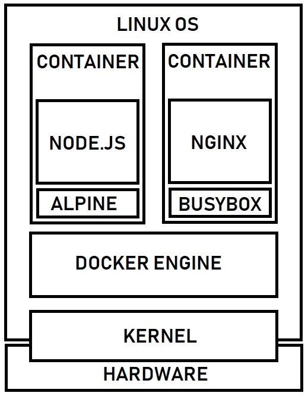
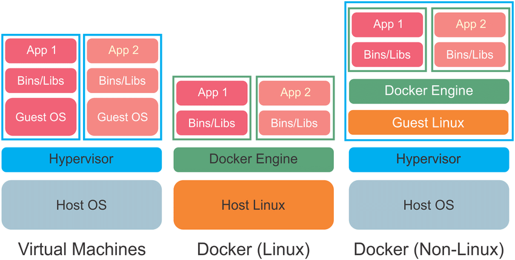

FAQs
1. What is Containerization?
Containerization is a software deployment process that bundles an application's code with all the files and libraries it needs to run on any infrastructure. Traditionally, to run any application on your computer, you had to install the version that matched your machine's operating system. For example, you needed to install the Windows version of a software package on a Windows machine. However, with containerization, you can create a single software package, or container, that runs on all types of devices and operating systems.
Container Architecture

2. What are the Benefits of Containerization?
Developers use containerization to build and deploy modern applications because of the following advantages.
1. Portability
Software developers use containerization to deploy applications in multiple environments without rewriting the program code. They build an application once and deploy it on multiple operating systems. For example, they run the same containers on Linux and Windows operating systems. Developers also upgrade legacy application code to modern versions using containers for deployment.
2. Scalability
Containers are lightweight software components that run efficiently. For example, a virtual machine can launch a containerized application faster because it doesn't need to boot an operating system. Therefore, software developers can easily add multiple containers for different applications on a single machine. The container cluster uses computing resources from the same shared operating system, but one container doesn't interfere with the operation of other containers.
3. Fault tolerance
Software development teams use containers to build fault-tolerant applications. They use multiple containers to run microservices on the cloud. Because containerized microservices operate in isolated user spaces, a single faulty container doesn't affect the other containers. This increases the resilience and availability of the application.
4. Agility
Containerized applications run in isolated computing environments. Software developers can troubleshoot and change the application code without interfering with the operating system, hardware, or other application services. They can shorten software release cycles and work on updates quickly with the container model.
3. What are containerization use cases?
The following are some use cases of containerization.
1. Cloud migration
Cloud migration, or the lift-and-shift approach, is a software strategy that involves encapsulating legacy applications in containers and deploying them in a cloud computing environment. Organizations can modernize their applications without rewriting the entire software code.
2. Adoption of microservice architecture
Organizations seeking to build cloud applications with microservices require containerization technology. The microservice architecture is a software development approach that uses multiple, interdependent software components to deliver a functional application. Each microservice has a unique and specific function. A modern cloud application consists of multiple microservices. For example, a video streaming application might have microservices for data processing, user tracking, billing, and personalization. Containerization provides the software tool to pack microservices as deployable programs on different platforms.
3. IoT devices
Internet of Things (IoT) devices contain limited computing resources, making manual software updating a complex process. Containerization allows developers to deploy and update applications across IoT devices easily.
4. What is container orchestration?
Container orchestration is a software technology that allows the automatic management of containers. This is necessary for modern cloud application development because an application might contain thousands of microservices in their respective containers. The large number of containerized microservices makes it impossible for software developers to manage them manually.
Virtual-Machines vs Containers

Benefits of container orchestration
Developers use container orchestration tools to automatically start, stop, and manage containers. Container orchestrators allow developers to scale cloud applications precisely and avoid human errors. For example, you can verify that containers are deployed with adequate resources from the host platform.
5. What are the types of container technology?
The following are some examples of popular technologies that developers use for containerization.
1. Docker
Docker, or Docker Engine, is a popular open-source container runtime that allows software developers to build, deploy, and test containerized applications on various platforms. Docker containers are self-contained packages of applications and related files that are created with the Docker framework.
Docker Architecture

2. Linux
Linux is an open-source operating system with built-in container technology. Linux containers are self-contained environments that allow multiple Linux-based applications to run on a single host machine. Software developers use Linux containers to deploy applications that write or read large amounts of data. Linux containers do not copy the entire operating system to their virtualized environment. Instead, the containers consist of necessary functionalities allocated in the Linux namespace.
3. Kubernetes
Kubernetes is a popular open-source container orchestrator that software developers use to deploy, scale, and manage a vast number of microservices. It has a declarative model that makes automating containers easier. The declarative model ensures that Kubernetes takes the appropriate action to fulfil the requirements based on the configuration files.
K8's Architecture